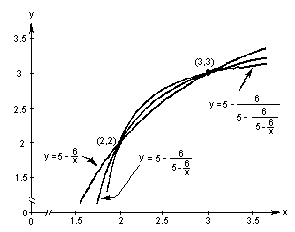

2c. Graph 3 successive 'pieces' of the infinite
continued fraction.

Notice that these three functions, which are each one piece of an hyperbola, intersect at (2,2) and (3,3), the two
roots of the quadratic equation x2 - 5x +
6 = 0 . WOW!
There are so many interesting things going on here!
To order Don's
materials
Back to Chap. 8-Iteration
Mathman Home